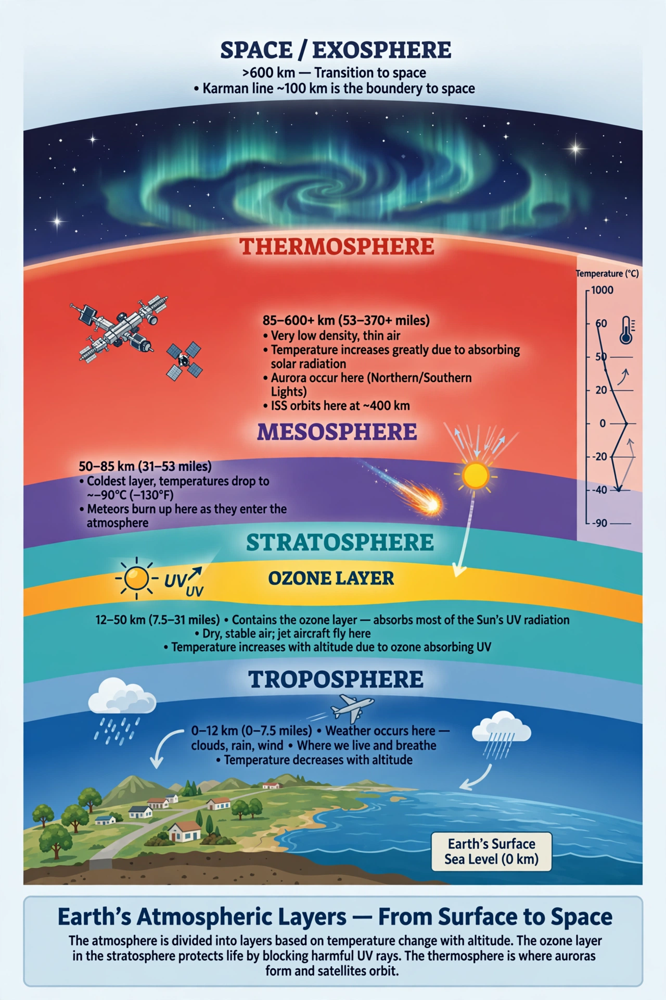

Atmosphere

An atmosphere is the layer of gases held around a planet (or other body) by gravity. This article concentrates on Earth's atmosphere: a thin envelope of nitrogen (about 78 per cent), oxygen (about 21 per cent) and trace gases that makes surface life possible, drives the Weather, and shields the surface from ultraviolet radiation and meteoroids. See also Atmosphere of Earth.
Although the atmosphere has no sharp upper boundary, most of its mass lies within about 12 kilometres of the surface, and the Kármán line at 100 kilometres is conventionally taken as the edge of space.
Layers
Temperature trends divide the atmosphere into layers. In the troposphere (surface to roughly 8–15 km), temperature falls with height and nearly all weather occurs. Above it the stratosphere warms with height because of the ozone layer, which absorbs ultraviolet light. The mesosphere cools again to the coldest temperatures in the Earth system; in the thermosphere temperatures soar but the air is vanishingly thin. The ionosphere, important for radio, overlaps the upper layers.
Composition and change
Dry air is about 78 per cent nitrogen, 21 per cent oxygen, 0.9 per cent argon and roughly 0.04 per cent carbon dioxide, plus variable water vapour (up to a few per cent near the surface). Human activity is changing this composition: carbon dioxide has risen by about half since pre-industrial times, driving the Greenhouse effect, while chlorofluorocarbons thinned stratospheric ozone (see Ozone depletion).
The atmosphere also carries aerosols — dust, sea salt, smoke and industrial particles — that affect clouds, health and climate.
Circulation
Solar heating, strongest at the equator, and Earth's rotation organise the air into great circulation cells and the prevailing winds and jet streams that transport heat and moisture poleward, feeding the Water cycle and shaping regional climates.
See also: Atmosphere of Earth · Weather · Ozone depletion · Climate · Jet stream